Lab 4 - Introduction to AWS and RESTful APIs
Overview
In this lab, you will explore a RESTful API and use it to connect with Amazon Web Services (AWS). First, you will create a ‘thing’ in AWS and use the HTTP GET command to retrieve status information about your thing. You will then use your code from Lab 3 to compose messages with an IR remote, which you will send to AWS using the HTTP POST command. You will use a rule in AWS to send the text to your email using Amazon’s Simple Notification Service (SNS). Much of the code you will need for accessing AWS will be provided to you. You will need to understand it at a high-level and modify it for your specific AWS account.
Please watch the video AWS IoT Getting Started to understand the basics of AWS IoT.
Learning Objectives
At the end of this lab, students should be able to:
- Explain at a high-level the AWS IoT model and how embedded devices fit into it
- Understand and Utilize an HTTP RESTful API
- Send data from a device to a user via Amazon's Simple Notification Service
- Recognize the role and necessity of key exchange and certification in network security
- Understand how the physical device can trigger actions on AWS via shadow updates
Requirements and Dependencies
Software Requirements
- Amazon AWS account1
- OpenSSL =v1.1.12
[1]: You can get a 1 year free trial account, and only 1 is needed per team
[2]: OpenSSL is necessary to convert
.dercertificates from the.pemformat. We have already provided the RootCA.dercertificate on Canvas, but you will need to do this for the unique certificates generated for your device. You must use OpenSSL Version 1.1.1.
Prelab: AWS IoT and REST APIs
This lab is primarily an introduction to using RESTful APIs and the AWS IoT ecosystem. REST APIs are extremely common for making use of third-party services, and are often a crucial part of IoT devices. AWS IoT is a powerful industry IoT ecosystem that many real products make use of. Both, however, have a bit of a learning curve, and conducting thorough self-study on both technologies and reading the documentation is crucial for understanding the interaction model between your device and the online service.
As per usual, we provide some light background on both topics, but it is critical that you conduct your own research to solidify your understanding for the prelab and lab.
Prelab Objectives
Students should be able to at minimum:
- identify the interaction model between AWS Device Shadows, Services, and the device iteslf
- understand what HTTP requests can be used on the shadow and how the shadow can be modified
- understand the difference between a physical device's state and the device shadow state
ideally:
- Predict the device and shadow state after a series of events have occured
- fix logical synchronization problems with device and its shadow
REST APIs
REST, or Representational State Transfer, is a standardized architecture for creating web services that maps onto the widely used Hypertext Transfer Protocol (HTTP). Although not as optimized for low power and low cost applications as MQTT, another IoT protocol, REST is widely used due to its simplicity, flexibility, and scalability.
REST API actions correspond directly with HTTP methods, though the two aren't necessarily the same. The REST (or RESTful) API defines the interaction model when making requests to a web service, while HTTP defines the data formatting and transfer processes of the messages being sent and received. The exact functionality of RESTful APIs will vary depending on the service with which you are interacting.
Some of the most commonly used HTTP requests/methods used for REST are:
GET: used to retrieve data or information from a service. May also just be used as a simple trigger.
- Example: For AWS IoT, GET can be used to retrieve a device’s parameters from its shadow.
POST: used to create (and often update) service entities.
- Example: For AWS IoT, POST is used to update a device’s parameters in the device shadow.
DELETE: used to manage and remove service entities.
- Example: For AWS IoT, DELETE is used to delete a device shadow.
Other RESTful API commands may exist, depending on the service, and are based off of the HTTP commands: HEAD, PUT, TRACE, OPTIONS, CONNECT, PATCH.
AWS IoT
Amazon Web Services (AWS) is a collection commercial web and cloud services, that users can pay to utilize. This removes the need for individual businesses to develop the vast and complex infrastructure needed for creating scalable web applications. The AWS Internet of Things (IoT) service was made public in 2015 and is an ecosystem and framework for managing IoT devices and services.
To represent real-world devices in the cloud and maintain a persistent/coherent state with intermittent network connections, AWS IoT has a concept of a device shadow. This shadow represents the real-world device’s state in the cloud. As the device changes states, it pushes its changes to the shadow device on AWS via MQTT or RESTful API. If the device loses network connection, and then comes back online, the device can pull the last-known state from the shadow to update itself. Updates to this shadow can trigger actions in other services as well using Rules. In this lab, a rule is used to send text messages to your email.
Prelab Checkoff Task
The prelab is a set of 5 questions designed to prepare you concpetually for the lab. The assignment is graded on completion and expected to take no more than an hour at most to finish.
Please bring a completed copy of the Lab 4 Prelab Assignment (posted on Canvas) and show your TA at the beginning of lab for verification.
Part I: Connecting to AWS and Updating the Device Shadow
Note: AWS IoT may have changed its UI since these instructions were originally written. Please be aware of this and if things are not exactly as they appear to be in the image, do your best to locate them on your own.
Setting up an Amazon AWS account
For this lab, you will need to setup an Amazon AWS account and get a basic understanding of AWS. One person per team will need to create an AWS account that can be shared for completing this lab. Notify a TA immediately if you or your partner are unable to do so.
After setting up an account, log into the console. You should end up seeing a page similar to Figure 1. After you are logged in, expand the services and click on the Internet of Things and select IoT Core. If it does not appear, make sure you have selected an Amazon AWS region at which this service is active. We recommend that you use the U.S. East (North Virginia) AWS server for this lab. The controls on the left will list your setup certificates, things, rules, and policies. In the bottom left corner of the screen, there is a Learn button and a link to Amazon’s IoT interactive tutorial. Click on it, and go through the tutorial for a high-level explanation about how AWS IoT uses Rules to do cool things.
Setting Up a Device Thing/Shadow
For the next part of the lab, you will need to generate the access keys to allow your CC3200 to connect to your Amazon AWS account securely. For a real-world device to connect to Amazon AWS you will need to do the following:
Create a Device Thing/Shadow (Device name, which can have variables created to interact with the device). This will generate a server-side representation of your real-world device (your thing).
Generate the required certificates and keys for establishing an encrypted connection. (This is different from the Starfield Cert)
Attach the certificate and keys to the Device Thing/Shadow.
Give the Device Thing/Shadow permission to use the IoT functions of AWS.
These steps are done using the AWS IoT Console interface.
Return to the AWS IoT page and click on Manage Things and create a thing. On the next page select Create single thing. You should be presented with a display similar to Figure 2.
For your first device thing, it is recommended you give it a descriptive name, like
\<my_id_name\>\_CC3200Boardand leave the Type and Attributes options blank. Select Unnamed Shadow option and click Next. Select Skip creating a certificate and create the thing. We will create the certificates later.If everything is successful you should see something similar to Figure 3.
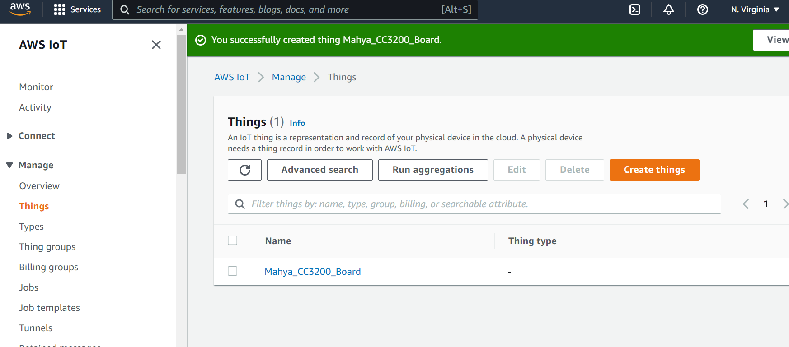 Figure 3: Thing created successfullyClick on the thing you have just created. On the next page open Device Shadow tab and then click on your classic shadow. This will display information about how to interact with the AWS representation of the device thing, namely the device shadow. You should end up with a view similar to Figure 4.
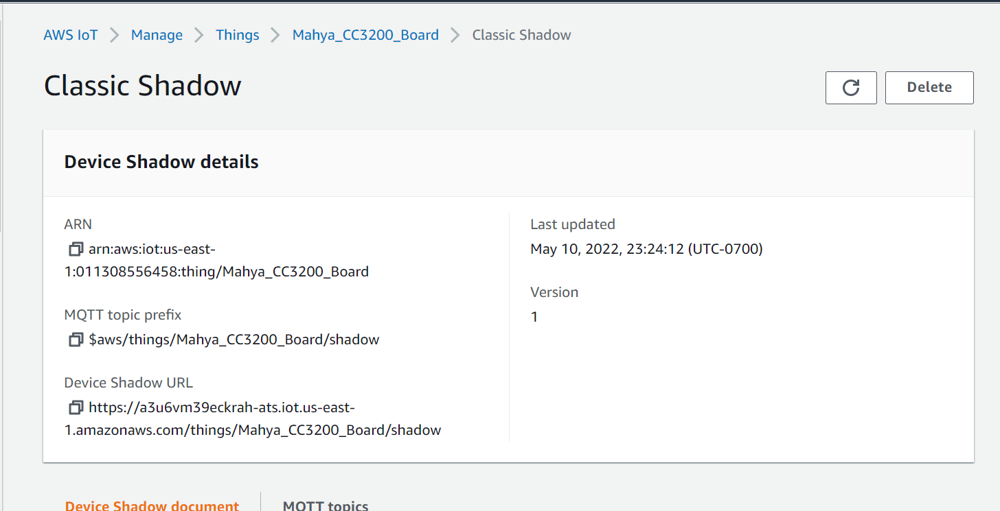 Figure 4: Detailed view of AWS ThingThe REST API endpoint displays the web address for the AWS Thing/Shadow and contains the web address of your account’s AWS Endpoint. For now, copy the endpoint address into a word or text file, and save it for reference. You will need it later to connect to the AWS server.
Below is an example Restful API endpoint address with the standard endpoint address for the account highlighted. The initial string of characters will be a unique string generated for your account by AWS, like so:
https://<endpoint>/things/<thingName>/shadowEx:
https://xxxxxxxxxxx.iot.us-west-2.amazonaws.com/things/CC3200_Thing/shadowEndpoint: "
<identifier>.iot.<region>.amazonaws.com"
After you have recorded your endpoint address, we can generate the required certificates, keys, and IoT permissions by opening the SecureCertificates tab and Create certificate. Use the Auto-generate method and select active for the certificate status.
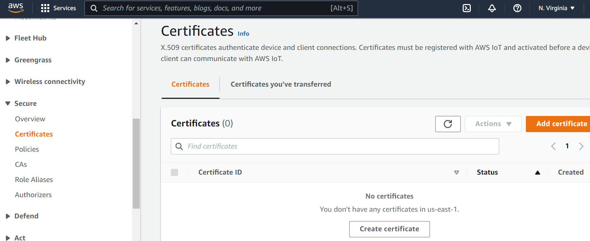 Figure 5: Connect a Device ScreenAWS should generate the following items:
- public key
- private key
- RootCA certificate
- certificate for device identification and traffic encryption
You should be able to download these (as well as AWS IoT’s root certificate authority) to your computer. You MUST download and save these files as you will not be able to retrieve the public and private keys after you close the page. Only Private and Device certificate will be used. RootCA has been provided on Canvas (
StarfieldClass2CA.crt.der).- We suggest saving the files in a folder with the name of your Thing/Shadow so that it is clear what keys/certificates correspond to which device.
- After downloading, don’t forget to Activate the certificate. You can learn more about how these certificates are used here.
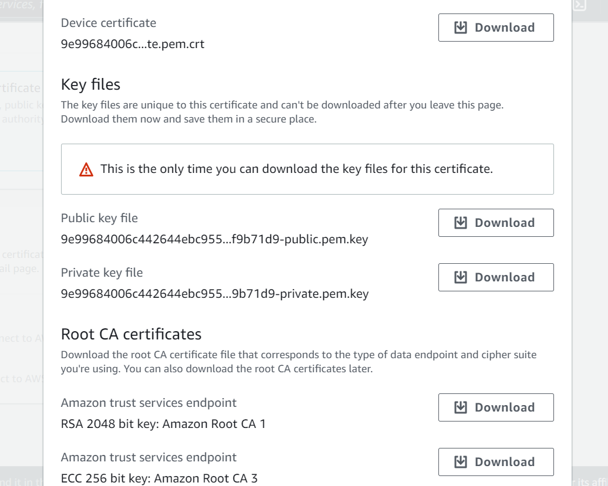 Figure 6: Download page for generated Certificate and Key files
Setting up an Access Policy for Device Shadows
To represent your thing (i.e. – our CC3200 board) in the cloud, AWS uses the concept of a device shadow to which you can get the last state, or push a new state to the server. This is useful when connection to a wireless network is intermittent, as the device could pull the previous state from the cloud and maintain continuity. However, appropriate configurations must be made on AWS to ensure that the devices have the privilege to perform the actions requested. These next steps will walk you through how to do this:
- On your IoT services panel, navigate to Secure Policies and create a new policy. Give your policy a descriptive name, and add two statements with actions “iot:GetThingShadow” and “iot:UpdateThingShadow”. Furthermore, update the Amazon Resource Number (ARN) to signify that these actions apply to your thing created previously (to find your ARN, see Figure 4). Be sure to select the Allow effect and finish creating the policy. You can learn more about the actions and other access management modules in the AWS documentation.
Now that you’ve created a policy with appropriate privileges for our lab, let’s attach it to the certificate your created previously.
- Navigate to the Certificates section (Figure 8) and select the certificate you have just created.
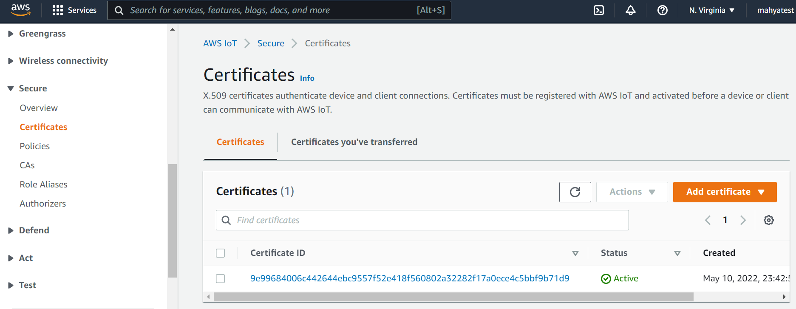 Figure 8: Select Created Certificate- Now select ActionsAttach policy (Figure 9). Select the policy you just created and click "Attach". This will allow you to use the GET and POST commands via REST from the device associated with this certificate.
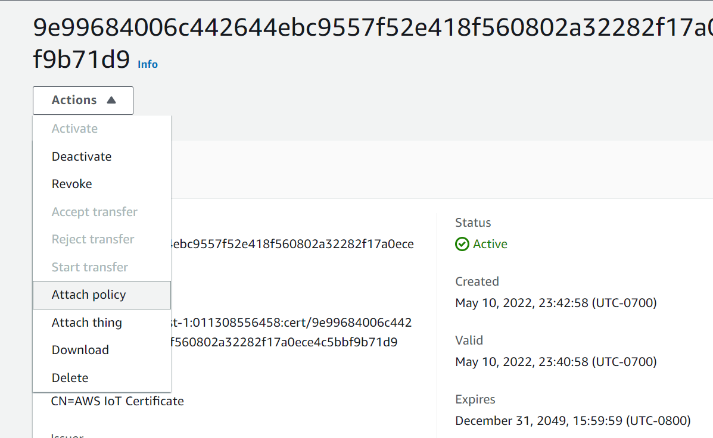 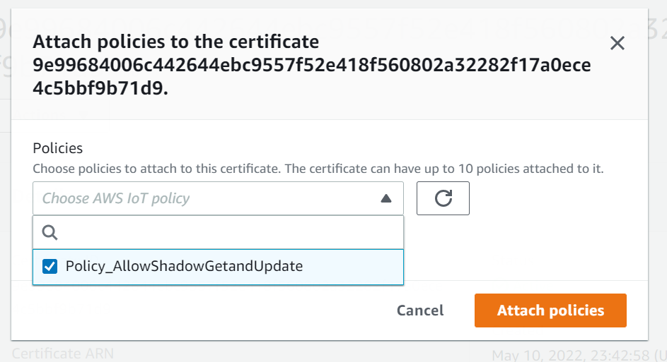 Figure 9: Attach a Policy to Certificate
Converting Keys/Certificates with OpenSSL
In this part of the lab, you will convert the private key and
certificates to another format. This is necessary since AWS uses the
.pem format, while your CC3200 uses the .der
format.
The connection security between the CC3200 board and AWS is guaranteed through the TLS protocol. There are four components involved: the public and private key, a certificate and a root certificate. While the private key is used to decipher encrypted messages, the certificate is used to validate the public key. Certificates are built on a chain of trust, and so there is a root certificate which is used to sign the certificate.
The key and certificates can exist in either .pem or
.der format. The former has ASCII-readable characters
(unsecure, readable), while the latter is in binary and more compact
(still unsecure, but harder to read). Your generated files in AWS are in
the .pem format but the CC3200 requires the
.der format.
To convert the files from .pem to .der
format, we will use openSSL, an open source library for transport layer
security.
Note: You will need to modify your file names and file paths to where you saved your keys/certificates. If necessary, move the files that need to be converted into the same file directory that openSSL was installed in. The
rootCAfile will be shared among all of the CC3200s used for the project and debugging. The client and private keys should be unique to each device. It is highly recommended to group or name the files accordingly so that the keys/certificate pairs do not get mixed up or over-written.
Windows
- Install OpenSSL 1.1.1. The following link may be helpful: https://wiki.openssl.org/index.php/Binaries
- Open a command prompt and navigate to the openSSL installation
directory. The commands that are needed are the following:
- For the certificate file:
$ openssl x509 -outform der -in "C:\\<path\to>\certificate.pem.crt" -out "C:\\<path\to>\client.der" - For the Private Key File:
$ openssl rsa -outform der -in "C:\\<path\to>\private.pem.key" -out "C:\\<path\to>\private.der"
- For the certificate file:
Mac
Open Terminal and install OpenSSL in a new mamba/conda environment.
$ mamba create -n openssl1.1 $ mamba activate openssl1.1 $ mamba install -c conda-forge openssl=1.1.1 -y // check for correct version of openssl $ openssl versionNavigate to the directory with the certificate and key files, then run the conversion commands:
- For the certificate file:
$ openssl x509 -outform der -in "path/to/certificate.pem.crt" -out "path/to/client.der" - For the Private Key file:
$ openssl rsa -outform der -in "path/to/private.pem.key" -out "path/to/private.der"
- For the certificate file:
Flash Key and Certificates to CC3200
If the firmware on your CC3200 is out of date, you should use UniFlash to update to the latest service pack. When you run the application program, you should verify that you get the updated Build Version in one of the status messages. For example:
Host Driver Version: 1.0.1.6
Build Version 2.10.0.0.31.1.4.0.1.1.0.3.34(exact numbers will be different. Your Host Driver version should be 1.0.1.15)
Note: For Mac users, you should be able to do this using
cc3200toolwith the following command:$ cc3200tool --sop2 \~rts --reset dtr \ format_flash --size=1M \ write_file --file-size=0x20000 \ --signature <path/to/servicepack>/ota/ota_1.0.1.15-2.15.0.1.ucf.signed.bin \ <path/to/servicepack>/ota/ota_1.0.1.15-2.15.0.1.ucf /sys/servicepack.ucf
To enable a secure connection from your CC3200, you need to download
the private key and certificates to your board. You will do this using
the UniFlash utility or cc3200tool, as described in the
Uniflash tutorial.
You should flash the .der formatted certificates,
root certificate (used for authenticating the AWS server),
client certificate (used by AWS to authenticate our device),
and the private key (for device-side encryption) to
User Files using the UniFlash utility, as shown in
Figure 10. You will specify the path to those files on your PC in the
Url box and select the Erase, Update, and Verify checkboxes, and click
Program to flash those files to the board. You can also load
the application (which you will develop in a later part) binary into
/sys/mcuimg.bin or you can download it from Code Composer Studio and run
it from the Debugger. Take note of the path of your files on the flash
(i.e. – the ‘Name’ field below) as you will need to reference them in
your code. If you forget them, you can list the files on your flash by
clicking on List Files in UniFlash.
Note: You can ignore those `cert` files listed under "System Files" in the figure
To reiterate: the cert files should be inside “User Files”. You can find an “add file” button near “program” and the path you use in your code should be exactly match the path you set in UNIFLASH, including the leading forward slash ‘/’.
Communicating with AWS IoT
Amazon’s RESTful API for AWS IoT provides access to device shadows, or thing shadows. These are JavaScript Object Notation (JSON) formatted data that allow state information for AWS things to be stored and retrieved, even when a device might be disconnected from the service. To store or retrieve data from a device shadow, Amazon provides special MQTT feeds and RESTful API calls.
For example, the return values of the GET and POST requests respectively are:
GET Method: (GetThingShadow)
GET /things/<thingName>/shadow HTTP/1.1 Host: <identifier>.iot.<region>.amazonaws.com Connection: Keep-AlivePOST Method: (UpdateThingShadow)
POST /things/<thingName>/shadow HTTP/1.1 Host: <identifier>.iot.<region>.amazonaws.com Connection: Keep-Alive Content-Type: application/json; charset=utf-8 Content-Length: <length> { "state":{ "desired":{ “color":"green" } } }
To send a RESTful API POST message to AWS, the service must first be connected to with the SimpleLink socket library. The initial connection should be to the base address for the service or website you are trying to communicate.
For example, rather than the entire REST path, you would only connect
to the domain:
<endpoint>.iot.<region>.amazonaws.com.
The HTTPS part of the address will be managed based on the socket credentials, and the AWS device thing subdirectory will be used in the RESTful API calls.
The connection should have the following configurations to connect to AWS IoT:
- TLS1.2
- Cipher: TLS ECDHE RSA with AES 256 CBC SHA
- Port: 8443
- Certificates/Keys needed:
- Certificate Authority for AWS (rootCA.der)
- x509 Device Certificate (cert.der)
- Private Key (private.der)
The RESTful API application requires Internet connectivity through an
Access Point (AP). The AP details are contained in the header file
common.h. Modify the common.h header file, if
necessary, to match the following configuration for the AP in the
lab:
// Values for below macros shall be modified as per access-point (AP) properties
// SimpleLink device will connect to following AP when application is executed
#define SSID_NAME "eec172" /* AP SSID */
#define SECURITY_TYPE SL_SEC_TYPE_OPEN /* Security type (OPEN or WEP or WPA)*/
#define SECURITY_KEY "" /* Password of the secured AP */
#define SSID_LEN_MAX 32
#define BSSID_LEN_MAX 6Once common.h has been modified, you can build
and test the example program.
Note:
common.hmay not reside in your workspace, so if you work on the lab computers and your personal laptop you will need to modify them in both places, and with the appropriate settings for the wireless network you are trying to connect with.
Another important change is that the secure client application must have the “current” date and time so that the credentials can be verified as valid. In this example, we use variables in the main program to update the date and time. The date and time only need to be relatively recent. Having the date and time hard-coded into the program is obviously not a robust or secure programming method since the code will eventually stop working unless periodically updated. However, in the interest of reducing complexity, we will use this method for this lab.
The date and time variables are stored in the following constants in
main.c. Update these values every time you
reprogram the device:
//NEED TO UPDATE THIS FOR IT TO WORK!
#define DATE 10 /* Current Date */
#define MONTH 5 /* Month 1-12 */
#define YEAR 2016 /* Current year */
#define HOUR 17 /* Time - hours */
#define MINUTE 0 /* Time - minutes */
#define SECOND 0 /* Time - seconds */Now your CC3200 should be able to connect securely to AWS.
Lab Checkoff Task 1
Demonstrate that you can use a POST request to post state to your AWS thing and use a GET request to obtain status information on your AWS thing. You should receive an HTTP 200 status code, showing a successful POST or GET request, as well as some basic status information about your device thing.
Note: you need to give your thing shadow some initial state before you can do an HTTP GET on it. You can give the shadow state by using the HTTP POST command or by using the AWS web interface.
In this part, you can start with the working example project
SSL_REST_API_AWS.zip uploaded on Canvas.
You will need to examine it carefully to understand it and modify it
appropriately. In particular, you should examine the
http_post() function to see how the HTTP command is sent to
AWS.
The data must be formatted properly or AWS (or any other web service) will not accept it as valid. In order to use this project on your system, you may need to modify the following files or parameters:
common.h– as described above for the "eec172" Access Point.main.c– you will need to use your own AWS endpoint path and thing name as well as changing the HTTP command in order to test both GET and POST. You should also change the message data that you post to your thing. However, be careful to keep the correct data format. You may also need to update the date, as described above.pinmux.c– verify that thepinmux.cfile sets up the pins that you intend to use. For the default application, only the UART0 and GPIO signals driving the on-board LED are actually used. If your program uses the same pins as the on-board LEDs, you will have problems.Flash the private key and the client certificates and root Certificate Authority into the CC3200 flash, as already described.
Demonstrate your working program to your TA to receive checkoff. You may continue to the next part in the meantime.
Part II: Using SNS to Send a Message to Email
For this part, you will compose a text message using your IR remote and send it to your email. This will be accomplished by setting up a topic in the Simple Notification Service, registering your email, and establishing a Rule in the IoT service to trigger when you update your device shadow to send messages to your email.
To do this you must perform the following:
- Create a thing for the cc3200 as you have done before.
- Create an SNS topic.
- Subscribe to the SNS topic with your email.
- Create a rule to forward incoming thing messages to your SNS topic.
- Use the REST API to post to your topic.
Note: For this lab we highly recommend that you use the “US East (North Virginia)” AWS server, as some servers are not compatible with certain AWS IoT services.
We will walk you through creating an SNS topic and creating a rule.
Note: If any step requires a “role”, you can create one of your own to continue.
Creating an SNS Topic
Amazon Web Services has a collection of different web services which can be integrated to perform a larger function. So far you have been using the IoT service to communicate the states of real-world devices or things to the cloud. The Simple Notification Service (SNS) is another module that will allow you to push messages to subscribers.
Navigate to the SNS service by expanding the services tab and finding SNS under Application Integration (Figure 11), and create a new standard topic (Figure 12).
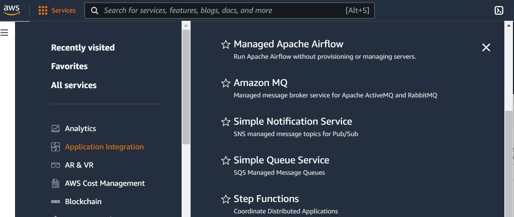 Figure 11: AWS Simple Notification Service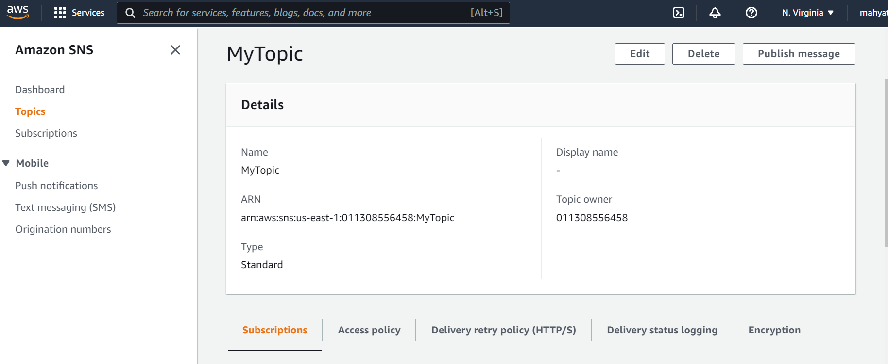 Figure 12: Creating a TopicAfterwards, create a subscription, where the protocol is EMAIL for text messages. The endpoint is the email address that will receive the messages. (Figure 13)
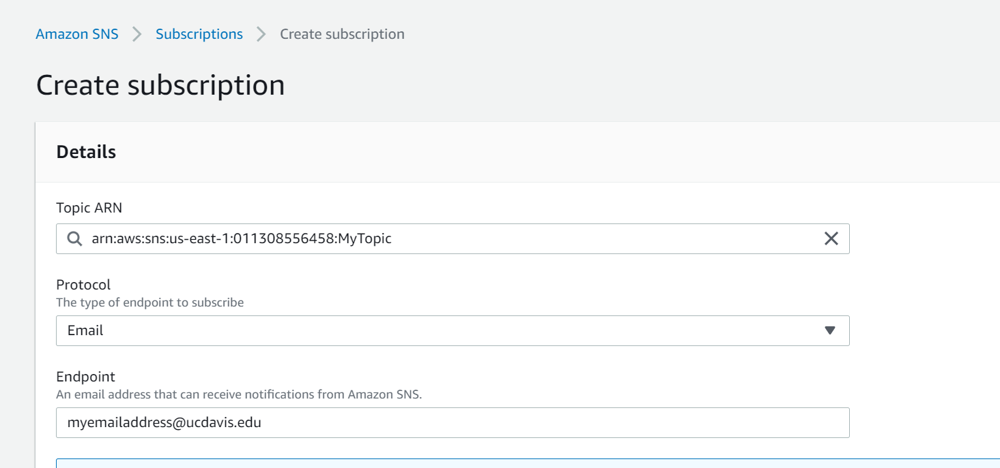 Figure 13: Creating a SubscriptionOpen your email and confirm the subscription.
Test that the module works by clicking on the ‘Publish message’ button on top of the page to manually send a text message from the AWS Console to your email (use RAW format for now).
Creating an IoT Rule
The next step is to create an IoT Rule that will trigger when you push updates to your shadow device. Earlier in the lab, we updated our device shadow (state) via the REST api. When our device shadow is updated, the IoT module publishes messages to several reserved Message Queue Telemetry Transport (MQTT) topics, a publish-subscribe ‘lightweight’ messaging protocol.
In order to trigger your rule, we will configure AWS to listen for updates to the device shadow via these topics. A full list of reserved topics that can be subscribed to can be found here.
Navigate to the ACT(Message Routing)Rules section in the IoT module, and create a new rule. (Figure 14)
- You should listen to the topic
$aws/things/<thingName>/shadow/update/accepted(the $ should be included), report on the attribute ‘state.desired’, and leave the condition blank.
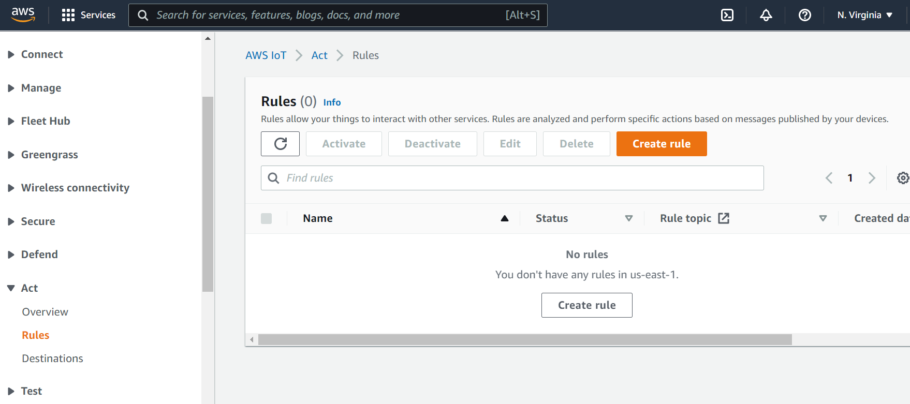 Figure 14: Creating a Rule- You should listen to the topic
Attach an action that will send an SNS push notification when the rule is triggered.
- Select the SNS target to be the topic you created previously, and use the ‘RAW’ message format (for now).
- You will also need to create an IAM role to allow the IoT to access the SNS service ‘securely’ (you can learn more about Identity Access and Management [IAM] roles here but will not need to understand them for this lab). Your SQL query statement for your rule should be similar to Figure 15.
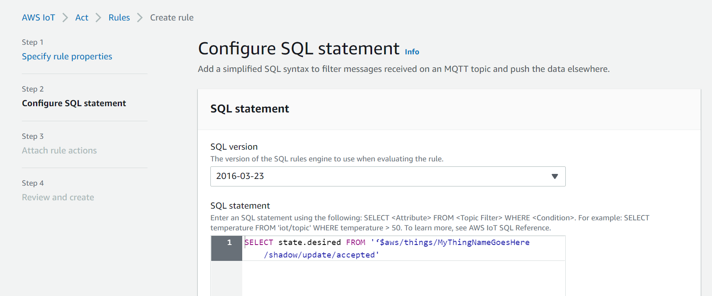 Figure 15: Setting up your IoT RuleMake sure the rule is enabled and try to push an update to your device shadow using your CC3200. In a couple of seconds you should get an email. Once that you works, you can clean up the formatting using JSON message format SNS action.
- To understand the JSON message format, go back to the SNS topic you
made, click the Publish a topic button, and experiment with the
JSON message generatorto find the appropriate syntax. - Determine how you will need to modify your SQL statement to "clean up" your message. More on SQL-like formatting.
HINT: look at left bar, where there is more information. You may want to focus on “SELECT clause” part of SQL reference.
- To understand the JSON message format, go back to the SNS topic you
made, click the Publish a topic button, and experiment with the
Lab Checkoff Task 2
Demonstrate to your TA that you can receive a clean sample message using the JSON message format to receive checkoff. You may continue to the next part in the meantime.
Part III: Integrate IR Remote Texting
Now that you know have the SNS module and IoT Rules set up appropriately, you can start integrating your IR remote text messaging code (Lab 3) to send a text to your email. Start with the program for connecting to AWS via the REST API that you implemented in the last part. When you are done, you will be sending a text from your IR remote, to the CC3200, and then through the cloud to your email. Cool, yeah?
Lab Checkoff Task 3
Integrate the IR Remote Multi-Tap Texting interface with your code from Task 2 to send custom messages to your email.
The multi-tap texting interface is the same as that implemented in lab3 Part IV.
Demonstrate your working program to your TA to receive checkoff.
Resources
-
- AWS IoT Create Rule
- AWS IoT Rule SQL Reference
- Shadow MQTT Topics. HTTP requests can be used to publish to these MQTT topics, which in turn can be used to invoke a rule.
Lab Report
Refer to the general lab report instructions for general formatting and guidelines.
Your lab report should include:
- A soft-copy of your well-written, well-commented code for
Task 3
- Include your names in the header comments of the file containing your main program.
- This can be a copy of the entire project directory (which you can
export in CCS to a zip file by Right-Clicking the project name and
selecting
Export -> General -> Archive Fileand specifying the location)
- A well-written PDF report that contains, in addition to the general
guidelines:
- An written description of your program that explains how each
section section of your code works and why it is necessary.
- In particular, you should describe each action taken in the
http_getandhttp_postmethods.
- In particular, you should describe each action taken in the
- A description of any noteworthy difficulties you encountered in constructing your solution.
- An written description of your program that explains how each
section section of your code works and why it is necessary.